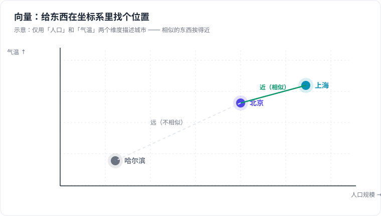
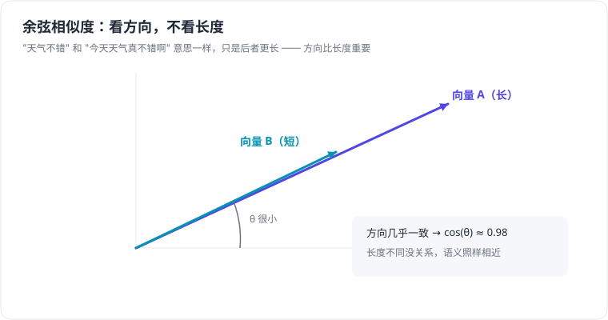
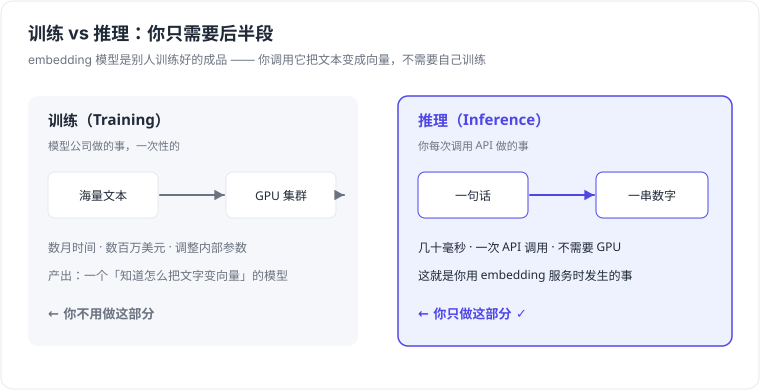

这是「写给工程师的机器学习入门」系列第 1 篇。 不讲公式、不讲论文，从一个你每天都在用的东西讲起：为什么电脑能判断两句话"意思相近"？ 答案藏在三个词里：向量、距离、模型。
结论先说
机器学习的本质，可以用一句话讲完：
把现实世界的东西（文字、图片、声音）变成一串数字，然后让计算机在这串数字上做数学运算。
那串数字叫向量（vector）。把东西变成向量的过程叫embedding（嵌入）。而"两句话意思相近"这件事，在计算机里就变成了"两个向量离得近"。
听起来简单，但这正是包括 ChatGPT、知识库检索、推荐系统在内的几乎所有 AI 应用的地基。
一、为什么必须是数字？
计算机不理解"意思"，它只会做算术。
你说"我想买一台轻薄本"，你说"有没有适合出差用的笔记本电脑"——人类一眼知道这两句在问同一件事。但计算机看到的只是两串字符，没有任何重叠的关键词："轻薄本"和"笔记本电脑"字面完全不同。
要让计算机处理"语义"，唯一的办法是：把语义编码成数字。
"我想买一台轻薄本" → [0.21, -0.43, 0.87, 0.12, ..., 0.56] （1536 个数字）
"适合出差用的笔记本" → [0.19, -0.41, 0.85, 0.15, ..., 0.54] （1536 个数字）这两个数组长得几乎一样。计算机不需要"理解"中文，只需要算一下这两个数组有多接近——接近，就意味着意思相近。
这就是向量表示（vector representation）的核心思想。
二、向量是什么？从一个熟悉的例子开始
如果你觉得"1536 个数字"很抽象，先看一个二维的例子。
假设我们只用两个维度描述城市：
维度 1 = 人口规模（0 到 1）
维度 2 = 平均气温（0 到 1）
北京 → [0.9, 0.4]
上海 → [0.95, 0.6]
哈尔滨 → [0.6, 0.1]把这三个点画在坐标纸上：

图 1：用「人口」和「气温」两个维度描述城市，北京和上海挨得近，哈尔滨离得远。
现在"北京和上海比北京和哈尔滨更相似"这件事，不需要人来判断——看谁和谁离得近就行。
向量的本质就是这个：用几个数字给东西定位，相似的东西在坐标系里挨着。
区别只在于：描述城市只需要 2 个维度，描述语言的细微差别需要几百到几千个维度。人类没法想象 1536 维空间，但计算机算距离毫无压力。
三、"距离"怎么算？余弦相似度
高维空间里最常用的是余弦相似度（cosine similarity）。它不看两个向量的绝对位置，只看它们的方向是否一致：
cos(θ) = 1 → 完全同向（意思极近）
cos(θ) = 0 → 垂直（无关）
cos(θ) = -1 → 完全相反为什么用方向而不是距离？因为文本长度会影响向量的"长度值"：
- "天气不错" 和 "今天天气真不错啊" 意思一样，但后者词更多，向量模长可能更大
- 用余弦相似度只看方向，就不受长度干扰

图 2：两个向量长度不同但方向几乎一致，余弦值接近 1——语义照样相近。
这就是知识库检索的原理：
# 用户提问 → 向量化
q_vec = embedding("怎么重置密码？")
# 知识库里的每段文档 → 事先向量化存好
doc_vecs = [...]
# 算相似度，取最像的几段
scores = cosine_similarity(q_vec, doc_vecs)
top_k = argsort(scores)[-3:]检索的本质，就是在一个巨大的向量堆里找"离问题最近的几段话"。
四、这些有意义的数字，是谁定出来的？
关键问题来了：为什么"轻薄本"和"笔记本电脑"的向量会挨着？谁规定了这些数字？
答案是： nobody 规定的，是模型从海量文本里自己学出来的。
训练过程大致是这样（简化版）：
- 给模型看海量文本："轻薄本适合出差携带…"、"笔记本电脑方便移动办公…"
- 模型发现这两个词经常出现在相似的上下文里
- 于是调整内部参数，让它们的向量靠近
- 反复几十亿次，最终形成一个"语义地图"——意思相近的词，位置就相近
一个重要结论：
向量里的每一个数字，人类都无法解释它代表什么。 它可能对应"能否携带"，也可能对应"价格区间"，或者完全是某种人类没有名字的特征组合。
我们不需要理解它，只需要它好用——语义相近的东西确实挨得近。这就是"表示学习"（representation learning）的思想。
五、训练 vs 推理：为什么你只需要后半段
理解这两个词，能解开很多工程困惑：
| 阶段 | 做什么 | 成本 |
|---|---|---|
| 训练（training） | 看海量数据，调整模型内部参数，学会"怎么把文字变成好向量" | 极高，需要大量 GPU 和数月时间 |
| 推理（inference） | 拿一个已经训练好的模型，把新文本变成向量 | 低，普通 CPU 就能跑 |

图 3：训练是模型公司做的重活；你调用 embedding API 时，只发生右边那一半。
你用的 OpenAI text-embedding-3-small、本地的 Ollama 模型，都是别人训练好的成品。你只做推理——调用一次 API，得到一串数字。
这就解释了为什么一个自托管项目可以完全不碰训练：
# AgentFlow 里的真实代码（backend/app/services/knowledge.py）
resp = self._client.embeddings.create(
model=self.model,
input=batch,
)
vectors.extend(item.embedding for item in resp.data)本地 Ollama 只需配置一个地址：
EMBEDDING_BASE_URL=http://localhost:11434/v1
EMBEDDING_MODEL=bge-large-zh你不需要 GPU、不需要训练数据、不需要懂反向传播——因为你站在别人训练好的模型肩膀上。
六、为什么向量维度很重要？
上一篇文章里提到过"换 embedding 模型要重建知识库"，现在可以解释为什么了。
不同模型输出的向量维度不同：
| 模型 | 维度 |
|---|---|
| text-embedding-3-small | 1536 |
| text-embedding-ada-002 | 1536 |
| bge-large-zh | 1024 |
1536 维的向量和 1024 维的向量没法算余弦相似度——就像你不能拿一个 3 位坐标和一个 2 位坐标算距离。
所以一旦换了模型，已经入库的所有向量全部作废，必须用新模型重新生成。这是工程上必须知道的约束。
七、三个常见误解
误解 1：「AI 就是 if-else 写多了」
不是。if-else 是人写规则；机器学习是从数据里学规则。前者你完全掌控逻辑，后者你只掌控数据和目标，规则是模型自己总结的——而且往往说不清它总结出了什么。
误解 2：「向量是模型'理解'了语言」
模型没有理解，它只是学到了一套统计上有用的坐标系统。它在你的任务上表现好，是因为这套坐标恰好把语义相近的东西放在一起。换个领域（比如医学文献），通用模型可能就不够好——需要领域模型或微调。
误解 3：「维度越高越好」
不一定。高维度能表达更细微的差别，但也更稀疏、更吃存储、检索更慢。1024 维的中文模型在很多场景不输 1536 维的通用模型——选模型要看场景，不是看参数表。
本篇小结
记住三句话就够了：
- 向量是把现实世界的东西变成数字的方式
- 语义相似 = 向量方向接近（余弦相似度）
- 模型负责"怎么变"，你只负责"调 API 拿结果"（推理）
这三句话是理解 RAG、推荐系统、语义搜索的起点。
下一篇预告
《为什么"国王 - 男人 + 女人 ≈ 女王"？embedding 是怎么学会语义的》
下一篇讲向量空间里那些有趣的现象，以及为什么模型能做到"没见过的词也能大概猜出意思"。
---
关于作者
本文是「写给工程师的机器学习入门」系列第 1 篇。作者 PHclaw 在做 AgentFlow——一个自托管 AI Agent 平台，把文章里的概念落到了真实代码里：知识库 RAG、embedding 端点配置、多模型热切换。
- 源码：https://github.com/PHclaw/agentflow
- 在线演示：http://159.75.21.251:3000
- 文档：https://phclaw.github.io/agentflow/
- 全部文章：https://phclaw.github.io/blog/
对机器学习概念有疑问，欢迎在 Discussions 里提问。